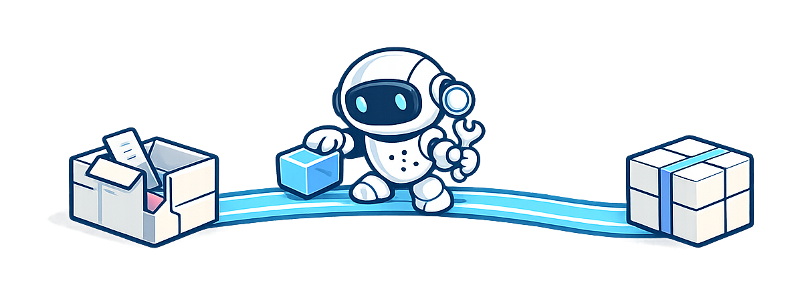
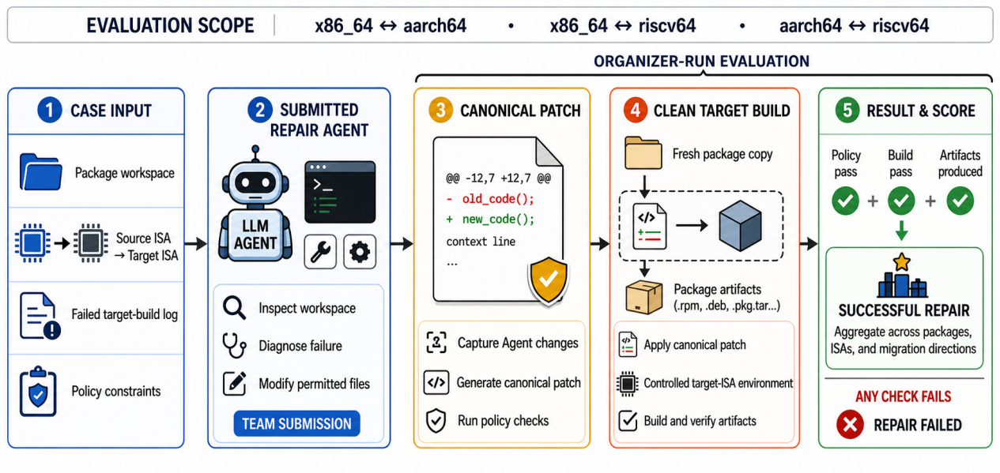

Build-Bench Challenge
Repair real cross-architecture package build failures with autonomous LLM Agents.
Cloud, edge, and emerging platforms increasingly span heterogeneous instruction set architectures, making software portability a growing engineering challenge. Architecture-specific code, dependencies, compilers, build options, and packaging logic can cause a package that builds on one architecture to fail on another. Build-Bench Challenge turns these failures into an executable, benchmark-driven competition for LLM-based repair Agents that generalize across packages, failure types, architectures, and migration directions.
Teams submit a runnable repair Agent rather than Case-specific patches. Organizers execute each qualified Agent on controlled source-to-target migration Cases, derive a canonical patch from its modifications, and reapply the patch to a clean copy of the package. A Case is counted as successfully repaired only when the patch complies with competition policy and the official target-architecture build completes with the expected package artifacts.
Evaluation scope: x86_64 ↔ aarch64 · x86_64 ↔ riscv64 · aarch64 ↔ riscv64


Supporters
-
 MeituanModel API support
MeituanModel API support
-
 Computer Network Information Center, Chinese Academy of SciencesCompute infrastructure support
Computer Network Information Center, Chinese Academy of SciencesCompute infrastructure support
What is the challenge?
Build-Bench Challenge asks teams to develop an LLM-based repair Agent for real software packages that build on one instruction set architecture (ISA) but fail after migration to another. The competition covers migrations among x86_64, aarch64, and riscv64, and evaluates whether an Agent can generalize across packages, failure types, architectures, and migration directions.
For each Case, the Agent receives a package workspace, source and target architecture metadata, and the failed target-build log. It may inspect and modify only permitted files. Organizers derive a canonical patch from these changes, apply it to a clean package copy, and rebuild the package in a controlled target-architecture environment. A repair succeeds only when the patch passes policy checks, the build completes, and the expected package artifacts are produced.
The workflow below summarizes how submitted Agents are executed, converted into canonical patches, and validated through clean target-architecture builds.

This challenge builds on Build-Bench, our study accepted for publication in ACM Transactions on Software Engineering and Methodology (TOSEM) [1], which established the original cross-architecture repair task and executable evaluation workflow. The competition substantially expands this foundation by covering bidirectional migrations among x86_64, aarch64, and riscv64, incorporating packages from more diverse software ecosystems and sources, and providing more than 200 public development packages and over 1,000 hidden evaluation packages. It also introduces a standardized Agent interface and organizer-run executable validation to evaluate generalization at competition scale.
How the competition works
- Develop — Build and test your Agent with the Starter Kit and public development Cases.
- Qualify — Submit an Agent version and pass the Hosted Smoke Test.
- Compete — Freeze a qualified version for organizer-run evaluation on hidden Cases and leaderboard ranking.
How is performance scored?
Using the workflow above, official ranking is based on verified executable outcomes, not similarity to a reference patch.
The primary metric is Verified Build Success Rate: the percentage of evaluated Cases that pass all policy, clean-build, and artifact checks. Execution Time and officially recorded Token Usage are reported separately as secondary efficiency metrics.
Important dates
- — Public development and validation open
- — Final Agent versions freeze
- — Final results published
- — Competition session and presentations
References
- Chenyu Zhao, Shenglin Zhang*, Zeshun Huang, Weilin Jin, Yongqian Sun, Dan Pei, Chaoyun Zhang, Qingwei Lin, Chetan Bansal, Saravan Rajmohan, Minghua Ma. Can Language Models Go Beyond Coding? Assessing the Capability of Language Models to Build Real-World Systems. ACM Transactions on Software Engineering and Methodology (TOSEM), 2026. (CCF A) [paper]
- Chenyu Zhao, Minghua Ma*, Shenglin Zhang, Zeshun Huang, Yongqian Sun, Chetan Bansal, Saravan Rajmohan, Dan Pei. EvidenT: An Evidence-Preserving Framework for Iterative System-Level Package Repair. ACM SIGSOFT International Symposium on Software Testing and Analysis (ISSTA), 2026. (CCF A) [paper]